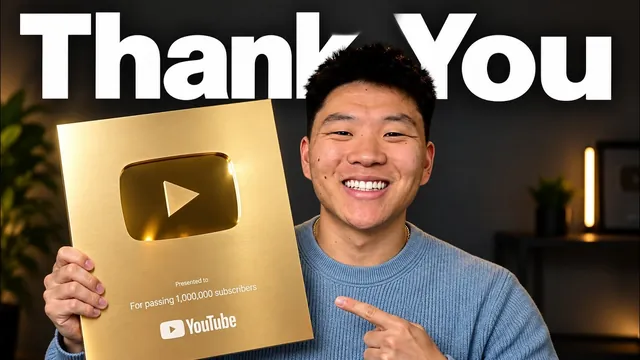

구독자 100만, 감사합니다

원본 영상 보기 →
- 자동화 전문가일수록 "무엇을 자동화하지 않을지"를 분명히 해요
- 도약의 병목은 기술이 아니라 결심과 주변 설득입니다
- 초기 품질 부족은 지속의 이유가 되지 않아요
한 줄 요약
AI 자동화 유튜버 Nate Herk가 구독자 100만 명을 기념해 지난 2년을 돌아보는 감사 영상이에요. 핵심은 이 대목입니다. "많은 영상을 어떻게 만드느냐"는 질문에 "AI 에이전트가 아니라 팀 덕분"이라고 못 박아요.
전체 내용 정리
100만이라는 숫자 앞에서
Nate Herk는 채널 분석 화면에 2024년 9월 19일부터 오늘까지 필터를 걸어 두고 영상을 시작합니다. 2년이 채 안 되는 기간이에요.
심박수가 평소 안정 시 54에서 93까지 올라갈 만큼 긴장한 상태로, 이 순간이 매우 특별하고 비현실적이라고 말합니다.
가장 오래된 영상을 열어 보니 이런 첫 인사가 나와요. "AI 에이전트는 정보가 너무 많아 배우기 벅차니, 내가 누군가에게 설명받고 싶었던 방식 그대로 쉽게 풀어 보겠다."
안정된 직장을 떠나 콘텐츠로
그는 첫 영상을 올리기 약 6개월 전 아이오와대학교를 졸업하고 솔트레이크시티로 이주해 골드만삭스에서 정규직으로 일하며 업무를 자동화하고 있었습니다.
영상 제작과 교육하는 과정에 빠져들었고, AI로 돈을 벌기 시작한 시점부터 안정된 직장을 그만두고 독립할 용기를 내기까지, 그리고 부모님을 설득하기까지 시간이 걸렸어요.
그 도약을 한 것을 매우 다행으로 여기고, 언제나 지지해 준 부모님과 가족·친구에게 감사를 전합니다. 그가 운영하는 무료 커뮤니티 AI Automation Society는 회원이 거의 50만 명에 가깝고, 이 일이 지금까지 해온 것 중 가장 보람 있다고 말해요.
"많은 영상을 어떻게 만드느냐"의 답은 팀이에요
커뮤니티에서 자주 받는 질문이 "어떻게 그렇게 많은 영상을 내느냐"인데요.
그는 댓글 분석·아이디어 발굴·패키징을 돕는 AI 에이전트를 쓰긴 하지만, 진짜 답은 팀이라고 분명히 합니다.
특히 John을 팀에 처음 합류시킨 사람이자 멘토로 꼽으며, 그가 브랜드의 방향과 "내가 어떤 사람이 되고 싶은가"를 잡아 줬다고 말해요. 그리고 덧붙입니다. "이건 어떤 AI 에이전트나 자동화도 결코 대체할 수 없고, 대체해서도 안 되는 부분이다."
커뮤니티 매니저 Yash는 채널 구독자가 8,000명이던 시절부터 지켜보며 자발적으로 참여하던 사람이었다고 해요.
초창기의 흔적들
그는 모든 썸네일을 직접 만들고 모든 영상을 직접 편집하던 때를 기억합니다.
오랫동안 마이크 없이 30달러짜리 웹캠만 썼고, 시청자들이 댓글로 "마이크 좀 사라, 웹캠 좀 바꿔라"라고 했어요. 타이핑할 때 소리가 마이크를 때리지 않게 키보드 밑에 수건을 깔아 뒀고요.
커뮤니티 회원들이 "당신 덕에 클라이언트를 계약했다, 큰 딜을 성사시켰다, 좋은 취업 기회를 얻었다"고 말해 줄 때가 가장 큰 보람이라고 합니다.
아직 배울 게 많다는 게 가장 좋대요
23세이던 시절, 다섯 번째 통화 끝에 "너무 어리다"는 이유로 놓친 계약을 구체적으로 기억합니다.
그는 그 판단을 이해한다면서도 이렇게 말해요. 누구나 서로에게 가르칠 것이 있고, 전문성은 언제나 상대적이며, 가면 증후군은 방을 채운 사람에 따라 사라졌다 나타났다 할 뿐 완전히 없어지지 않는다고요.
매일, 매달, 팀원과의 모든 대화에서 새로 배우는 것이 이 일의 가장 좋은 점이라며, 앞으로 하고 싶은 것이 아직 많다는 말로 마무리합니다.
핵심 인사이트
- 자동화 전문가일수록 "무엇을 자동화하지 않을지"를 분명히 해요: 콘텐츠를 대량 생산하는 사람조차 댓글 분석·아이디어·패키징만 AI에 맡기고, 브랜드 방향과 사람 판단은 팀의 몫으로 남겼습니다. 자동화의 성숙도는 위임 범위가 아니라 남겨 둔 영역의 선명함으로 드러나요.
- 도약의 병목은 기술이 아니라 결심과 주변 설득입니다: AI로 돈을 벌기 시작한 뒤에도 안정된 직장을 그만두기까지, 부모님을 납득시키기까지 시간이 걸렸어요. 1인 사업 전환에서 실제 장애물은 도구가 아닙니다.
- 초기 품질 부족은 지속의 이유가 되지 않아요: 마이크도 없이 30달러 웹캠으로 시작해 2년 만에 100만이 됐습니다. 장비와 완성도는 시작을 미룰 근거가 아니에요.
오늘 당장 해볼 것
- 지금 반복하는 콘텐츠·마케팅 업무를 "AI에 맡길 것"과 "끝까지 사람이 판단할 것" 두 칸으로 나눠 적어 보세요. 두 번째 칸이 비어 있다면 위임 범위를 다시 검토할 때입니다.
- "장비가 갖춰지면 시작하겠다"고 미뤄 둔 콘텐츠 채널이 있다면, 이번 주에 가진 장비만으로 첫 편을 올려 보세요.
- 외부에 일을 맡길 때 "이 사람이 우리 방향성을 잡아 줄 수 있는가"를 기준에 넣어 보세요. 실행만 대신하는 관계와 방향을 함께 잡는 관계는 완전히 다릅니다.